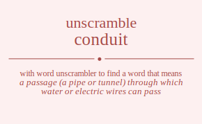

The word found after unscrambling conduit means that a passage (a pipe or tunnel) through which water or electric wires can pass, .

The word found after unscrambling conduit means that a passage (a pipe or tunnel) through which water or electric wires can pass, .
You can also find solutions for different combinations of letters in conduit like conduit conduti condiut conditu condtui condtiu conudit conudti conuidt conuitd conutdi conutid conidut conidtu coniudt coniutd conitdu conitud contdui contdiu contudi contuid contidu contiud codnuit codnuti codniut codnitu codntui codntiu codunit codunti coduint coduitn codutni codutin codinut codintu codiunt codiutn coditnu coditun codtnui codtniu codtuni codtuin codtinu codtiun coundit coundti counidt counitd countdi countid coudnit coudnti coudint couditn coudtni coudtin couindt couintd couidnt couidtn couitnd couitdn coutndi coutnid coutdni coutdin coutind coutidn coindut coindtu coinudt coinutd cointdu cointud coidnut coidntu coidunt coidutn coidtnu coidtun coiundt coiuntd coiudnt coiudtn coiutnd coiutdn coitndu coitnud coitdnu coitdun coitund coitudn cotndui cotndiu cotnudi cotnuid cotnidu cotniud cotdnui cotdniu cotduni cotduin cotdinu cotdiun cotundi cotunid cotudni cotudin cotuind cotuidn cotindu cotinud cotidnu cotidun cotiund cotiudn cnoduit cnoduti cnodiut cnoditu cnodtui cnodtiu cnoudit cnoudti cnouidt cnouitd cnoutdi cnoutid cnoidut cnoidtu cnoiudt cnoiutd cnoitdu cnoitud cnotdui cnotdiu cnotudi cnotuid cnotidu cnotiud cndouit cndouti cndoiut cndoitu cndotui cndotiu cnduoit cnduoti cnduiot cnduito cndutoi cndutio cndiout cndiotu cndiuot cndiuto cnditou cndituo cndtoui cndtoiu cndtuoi cndtuio cndtiou cndtiuo cnuodit cnuodti cnuoidt cnuoitd cnuotdi cnuotid cnudoit cnudoti cnudiot cnudito cnudtoi cnudtio cnuiodt cnuiotd cnuidot cnuidto cnuitod cnuitdo cnutodi cnutoid cnutdoi cnutdio cnutiod cnutido cniodut cniodtu cnioudt cnioutd cniotdu cniotud cnidout cnidotu cniduot cniduto cnidtou cnidtuo cniuodt cniuotd cniudot cniudto cniutod cniutdo cnitodu cnitoud cnitdou cnitduo cnituod cnitudo cntodui cntodiu cntoudi cntouid cntoidu cntoiud cntdoui cntdoiu cntduoi cntduio cntdiou cntdiuo cntuodi cntuoid cntudoi cntudio cntuiod cntuido cntiodu cntioud cntidou cntiduo cntiuod cntiudo cdonuit cdonuti cdoniut cdonitu cdontui cdontiu cdounit cdounti cdouint cdouitn cdoutni cdoutin cdoinut cdointu cdoiunt cdoiutn cdoitnu cdoitun cdotnui cdotniu cdotuni cdotuin cdotinu cdotiun cdnouit cdnouti cdnoiut cdnoitu cdnotui cdnotiu cdnuoit cdnuoti cdnuiot cdnuito cdnutoi cdnutio cdniout cdniotu cdniuot cdniuto cdnitou cdnituo cdntoui cdntoiu cdntuoi cdntuio cdntiou cdntiuo cduonit cduonti cduoint cduoitn cduotni cduotin cdunoit cdunoti cduniot cdunito cduntoi cduntio cduiont cduiotn cduinot cduinto cduiton cduitno cdutoni cdutoin cdutnoi cdutnio cdution cdutino cdionut cdiontu cdiount cdioutn cdiotnu cdiotun cdinout cdinotu cdinuot cdinuto cdintou cdintuo cdiuont cdiuotn cdiunot cdiunto cdiuton cdiutno cditonu cditoun cditnou cditnuo cdituon cdituno cdtonui cdtoniu cdtouni cdtouin cdtoinu cdtoiun cdtnoui cdtnoiu cdtnuoi cdtnuio cdtniou cdtniuo cdtuoni cdtuoin cdtunoi cdtunio cdtuion cdtuino cdtionu cdtioun cdtinou cdtinuo cdtiuon cdtiuno cuondit cuondti cuonidt cuonitd cuontdi cuontid cuodnit cuodnti cuodint cuoditn cuodtni cuodtin cuoindt cuointd cuoidnt cuoidtn cuoitnd cuoitdn cuotndi cuotnid cuotdni cuotdin cuotind cuotidn cunodit cunodti cunoidt cunoitd cunotdi cunotid cundoit cundoti cundiot cundito cundtoi cundtio cuniodt cuniotd cunidot cunidto cunitod cunitdo cuntodi cuntoid cuntdoi cuntdio cuntiod cuntido cudonit cudonti cudoint cudoitn cudotni cudotin cudnoit cudnoti cudniot cudnito cudntoi cudntio cudiont cudiotn cudinot cudinto cuditon cuditno cudtoni cudtoin cudtnoi cudtnio cudtion cudtino cuiondt cuiontd cuiodnt cuiodtn cuiotnd cuiotdn cuinodt cuinotd cuindot cuindto cuintod cuintdo cuidont cuidotn cuidnot cuidnto cuidton cuidtno cuitond cuitodn cuitnod cuitndo cuitdon cuitdno cutondi cutonid cutodni cutodin cutoind cutoidn cutnodi cutnoid cutndoi cutndio cutniod cutnido cutdoni cutdoin cutdnoi cutdnio cutdion cutdino cutiond cutiodn cutinod cutindo cutidon cutidno ciondut ciondtu cionudt cionutd ciontdu ciontud ciodnut ciodntu ciodunt ciodutn ciodtnu ciodtun cioundt ciountd cioudnt cioudtn cioutnd cioutdn ciotndu ciotnud ciotdnu ciotdun ciotund ciotudn cinodut cinodtu cinoudt cinoutd cinotdu cinotud cindout cindotu cinduot cinduto cindtou cindtuo cinuodt cinuotd cinudot cinudto cinutod cinutdo cintodu cintoud cintdou cintduo cintuod cintudo cidonut cidontu cidount cidoutn cidotnu cidotun cidnout cidnotu cidnuot cidnuto cidntou cidntuo ciduont ciduotn cidunot cidunto ciduton cidutno cidtonu cidtoun cidtnou cidtnuo cidtuon cidtuno ciuondt ciuontd ciuodnt ciuodtn ciuotnd ciuotdn ciunodt ciunotd ciundot ciundto ciuntod ciuntdo ciudont ciudotn ciudnot ciudnto ciudton ciudtno ciutond ciutodn ciutnod ciutndo ciutdon ciutdno citondu citonud citodnu citodun citound citoudn citnodu citnoud citndou citnduo citnuod citnudo citdonu citdoun citdnou citdnuo citduon citduno cituond cituodn citunod citundo citudon citudno ctondui ctondiu ctonudi ctonuid ctonidu ctoniud ctodnui ctodniu ctoduni ctoduin ctodinu ctodiun ctoundi ctounid ctoudni ctoudin ctouind ctouidn ctoindu ctoinud ctoidnu ctoidun ctoiund ctoiudn ctnodui ctnodiu ctnoudi ctnouid ctnoidu ctnoiud ctndoui ctndoiu ctnduoi ctnduio ctndiou ctndiuo ctnuodi ctnuoid ctnudoi ctnudio ctnuiod ctnuido ctniodu ctnioud ctnidou ctniduo ctniuod ctniudo ctdonui ctdoniu ctdouni ctdouin ctdoinu ctdoiun ctdnoui ctdnoiu ctdnuoi ctdnuio ctdniou ctdniuo ctduoni ctduoin ctdunoi ctdunio ctduion ctduino ctdionu ctdioun ctdinou ctdinuo ctdiuon ctdiuno ctuondi ctuonid ctuodni ctuodin ctuoind ctuoidn ctunodi ctunoid ctundoi ctundio ctuniod ctunido ctudoni ctudoin ctudnoi ctudnio ctudion ctudino ctuiond ctuiodn ctuinod ctuindo ctuidon ctuidno ctiondu ctionud ctiodnu ctiodun ctiound ctioudn ctinodu ctinoud ctindou ctinduo ctinuod ctinudo ctidonu ctidoun ctidnou ctidnuo ctiduon ctiduno ctiuond ctiuodn ctiunod ctiundo ctiudon ctiudno ocnduit ocnduti ocndiut ocnditu ocndtui ocndtiu ocnudit ocnudti ocnuidt ocnuitd ocnutdi ocnutid ocnidut ocnidtu ocniudt ocniutd ocnitdu ocnitud ocntdui ocntdiu ocntudi ocntuid ocntidu ocntiud ocdnuit ocdnuti ocdniut ocdnitu ocdntui ocdntiu ocdunit ocdunti ocduint ocduitn ocdutni ocdutin ocdinut ocdintu ocdiunt ocdiutn ocditnu ocditun ocdtnui ocdtniu ocdtuni ocdtuin ocdtinu ocdtiun ocundit ocundti ocunidt ocunitd ocuntdi ocuntid ocudnit ocudnti ocudint ocuditn ocudtni ocudtin ocuindt ocuintd ocuidnt ocuidtn ocuitnd ocuitdn ocutndi ocutnid ocutdni ocutdin ocutind ocutidn ocindut ocindtu ocinudt ocinutd ocintdu ocintud ocidnut ocidntu ocidunt ocidutn ocidtnu ocidtun ociundt ociuntd ociudnt ociudtn ociutnd ociutdn ocitndu ocitnud ocitdnu ocitdun ocitund ocitudn octndui octndiu octnudi octnuid octnidu octniud octdnui octdniu octduni octduin octdinu octdiun octundi octunid octudni octudin octuind octuidn octindu octinud octidnu octidun octiund octiudn oncduit oncduti oncdiut oncditu oncdtui oncdtiu oncudit oncudti oncuidt oncuitd oncutdi oncutid oncidut oncidtu onciudt onciutd oncitdu oncitud onctdui onctdiu onctudi onctuid onctidu onctiud ondcuit ondcuti ondciut ondcitu ondctui ondctiu onducit onducti onduict onduitc ondutci ondutic ondicut ondictu ondiuct ondiutc onditcu ondituc ondtcui ondtciu ondtuci ondtuic ondticu ondtiuc onucdit onucdti onucidt onucitd onuctdi onuctid onudcit onudcti onudict onuditc onudtci onudtic onuicdt onuictd onuidct onuidtc onuitcd onuitdc onutcdi onutcid onutdci onutdic onuticd onutidc onicdut onicdtu onicudt onicutd onictdu onictud onidcut onidctu oniduct onidutc onidtcu onidtuc oniucdt oniuctd oniudct oniudtc oniutcd oniutdc onitcdu onitcud onitdcu onitduc onitucd onitudc ontcdui ontcdiu ontcudi ontcuid ontcidu ontciud ontdcui ontdciu ontduci ontduic ontdicu ontdiuc ontucdi ontucid ontudci ontudic ontuicd ontuidc onticdu onticud ontidcu ontiduc ontiucd ontiudc odcnuit odcnuti odcniut odcnitu odcntui odcntiu odcunit odcunti odcuint odcuitn odcutni odcutin odcinut odcintu odciunt odciutn odcitnu odcitun odctnui odctniu odctuni odctuin odctinu odctiun odncuit odncuti odnciut odncitu odnctui odnctiu odnucit odnucti odnuict odnuitc odnutci odnutic odnicut odnictu odniuct odniutc odnitcu odnituc odntcui odntciu odntuci odntuic odnticu odntiuc oducnit oducnti oducint oducitn oductni oductin oduncit oduncti odunict odunitc oduntci oduntic oduicnt oduictn oduinct oduintc oduitcn oduitnc odutcni odutcin odutnci odutnic oduticn odutinc odicnut odicntu odicunt odicutn odictnu odictun odincut odinctu odinuct odinutc odintcu odintuc odiucnt odiuctn odiunct odiuntc odiutcn odiutnc oditcnu oditcun oditncu oditnuc oditucn oditunc odtcnui odtcniu odtcuni odtcuin odtcinu odtciun odtncui odtnciu odtnuci odtnuic odtnicu odtniuc odtucni odtucin odtunci odtunic odtuicn odtuinc odticnu odticun odtincu odtinuc odtiucn odtiunc oucndit oucndti oucnidt oucnitd oucntdi oucntid oucdnit oucdnti oucdint oucditn oucdtni oucdtin oucindt oucintd oucidnt oucidtn oucitnd oucitdn ouctndi ouctnid ouctdni ouctdin ouctind ouctidn ouncdit ouncdti ouncidt ouncitd ounctdi ounctid oundcit oundcti oundict ounditc oundtci oundtic ounicdt ounictd ounidct ounidtc ounitcd ounitdc ountcdi ountcid ountdci ountdic ounticd ountidc oudcnit oudcnti oudcint oudcitn oudctni oudctin oudncit oudncti oudnict oudnitc oudntci oudntic oudicnt oudictn oudinct oudintc ouditcn ouditnc oudtcni oudtcin oudtnci oudtnic oudticn oudtinc ouicndt ouicntd ouicdnt ouicdtn ouictnd ouictdn ouincdt ouinctd ouindct ouindtc ouintcd ouintdc ouidcnt ouidctn ouidnct ouidntc ouidtcn ouidtnc ouitcnd ouitcdn ouitncd ouitndc ouitdcn ouitdnc outcndi outcnid outcdni outcdin outcind outcidn outncdi outncid outndci outndic outnicd outnidc outdcni outdcin outdnci outdnic outdicn outdinc outicnd outicdn outincd outindc outidcn outidnc oicndut oicndtu oicnudt oicnutd oicntdu oicntud oicdnut oicdntu oicdunt oicdutn oicdtnu oicdtun oicundt oicuntd oicudnt oicudtn oicutnd oicutdn oictndu oictnud oictdnu oictdun oictund oictudn oincdut oincdtu oincudt oincutd oinctdu oinctud oindcut oindctu oinduct oindutc oindtcu oindtuc oinucdt oinuctd oinudct oinudtc oinutcd oinutdc ointcdu ointcud ointdcu ointduc ointucd ointudc oidcnut oidcntu oidcunt oidcutn oidctnu oidctun oidncut oidnctu oidnuct oidnutc oidntcu oidntuc oiducnt oiductn oidunct oiduntc oidutcn oidutnc oidtcnu oidtcun oidtncu oidtnuc oidtucn oidtunc oiucndt oiucntd oiucdnt oiucdtn oiuctnd oiuctdn oiuncdt oiunctd oiundct oiundtc oiuntcd oiuntdc oiudcnt oiudctn oiudnct oiudntc oiudtcn oiudtnc oiutcnd oiutcdn oiutncd oiutndc oiutdcn oiutdnc oitcndu oitcnud oitcdnu oitcdun oitcund oitcudn oitncdu oitncud oitndcu oitnduc oitnucd oitnudc oitdcnu oitdcun oitdncu oitdnuc oitducn oitdunc oitucnd oitucdn oituncd oitundc oitudcn oitudnc otcndui otcndiu otcnudi otcnuid otcnidu otcniud otcdnui otcdniu otcduni otcduin otcdinu otcdiun otcundi otcunid otcudni otcudin otcuind otcuidn otcindu otcinud otcidnu otcidun otciund otciudn otncdui otncdiu otncudi otncuid otncidu otnciud otndcui otndciu otnduci otnduic otndicu otndiuc otnucdi otnucid otnudci otnudic otnuicd otnuidc otnicdu otnicud otnidcu otniduc otniucd otniudc otdcnui otdcniu otdcuni otdcuin otdcinu otdciun otdncui otdnciu otdnuci otdnuic otdnicu otdniuc otducni otducin otdunci otdunic otduicn otduinc otdicnu otdicun otdincu otdinuc otdiucn otdiunc otucndi otucnid otucdni otucdin otucind otucidn otuncdi otuncid otundci otundic otunicd otunidc otudcni otudcin otudnci otudnic otudicn otudinc otuicnd otuicdn otuincd otuindc otuidcn otuidnc oticndu oticnud oticdnu oticdun oticund oticudn otincdu otincud otindcu otinduc otinucd otinudc otidcnu otidcun otidncu otidnuc otiducn otidunc otiucnd otiucdn otiuncd otiundc otiudcn otiudnc ncoduit ncoduti ncodiut ncoditu ncodtui ncodtiu ncoudit ncoudti ncouidt ncouitd ncoutdi ncoutid ncoidut ncoidtu ncoiudt ncoiutd ncoitdu ncoitud ncotdui ncotdiu ncotudi ncotuid ncotidu ncotiud ncdouit ncdouti ncdoiut ncdoitu ncdotui ncdotiu ncduoit ncduoti ncduiot ncduito ncdutoi ncdutio ncdiout ncdiotu ncdiuot ncdiuto ncditou ncdituo ncdtoui ncdtoiu ncdtuoi ncdtuio ncdtiou ncdtiuo ncuodit ncuodti ncuoidt ncuoitd ncuotdi ncuotid ncudoit ncudoti ncudiot ncudito ncudtoi ncudtio ncuiodt ncuiotd ncuidot ncuidto ncuitod ncuitdo ncutodi ncutoid ncutdoi ncutdio ncutiod ncutido nciodut nciodtu ncioudt ncioutd nciotdu nciotud ncidout ncidotu nciduot nciduto ncidtou ncidtuo nciuodt nciuotd nciudot nciudto nciutod nciutdo ncitodu ncitoud ncitdou ncitduo ncituod ncitudo nctodui nctodiu nctoudi nctouid nctoidu nctoiud nctdoui nctdoiu nctduoi nctduio nctdiou nctdiuo nctuodi nctuoid nctudoi nctudio nctuiod nctuido nctiodu nctioud nctidou nctiduo nctiuod nctiudo nocduit nocduti nocdiut nocditu nocdtui nocdtiu nocudit nocudti nocuidt nocuitd nocutdi nocutid nocidut nocidtu nociudt nociutd nocitdu nocitud noctdui noctdiu noctudi noctuid noctidu noctiud nodcuit nodcuti nodciut nodcitu nodctui nodctiu noducit noducti noduict noduitc nodutci nodutic nodicut nodictu nodiuct nodiutc noditcu nodituc nodtcui nodtciu nodtuci nodtuic nodticu nodtiuc noucdit noucdti noucidt noucitd nouctdi nouctid noudcit noudcti noudict nouditc noudtci noudtic nouicdt nouictd nouidct nouidtc nouitcd nouitdc noutcdi noutcid noutdci noutdic nouticd noutidc noicdut noicdtu noicudt noicutd noictdu noictud noidcut noidctu noiduct noidutc noidtcu noidtuc noiucdt noiuctd noiudct noiudtc noiutcd noiutdc noitcdu noitcud noitdcu noitduc noitucd noitudc notcdui notcdiu notcudi notcuid notcidu notciud notdcui notdciu notduci notduic notdicu notdiuc notucdi notucid notudci notudic notuicd notuidc noticdu noticud notidcu notiduc notiucd notiudc ndcouit ndcouti ndcoiut ndcoitu ndcotui ndcotiu ndcuoit ndcuoti ndcuiot ndcuito ndcutoi ndcutio ndciout ndciotu ndciuot ndciuto ndcitou ndcituo ndctoui ndctoiu ndctuoi ndctuio ndctiou ndctiuo ndocuit ndocuti ndociut ndocitu ndoctui ndoctiu ndoucit ndoucti ndouict ndouitc ndoutci ndoutic ndoicut ndoictu ndoiuct ndoiutc ndoitcu ndoituc ndotcui ndotciu ndotuci ndotuic ndoticu ndotiuc nducoit nducoti nduciot nducito nductoi nductio nduocit nduocti nduoict nduoitc nduotci nduotic nduicot nduicto nduioct nduiotc nduitco nduitoc ndutcoi ndutcio ndutoci ndutoic ndutico ndutioc ndicout ndicotu ndicuot ndicuto ndictou ndictuo ndiocut ndioctu ndiouct ndioutc ndiotcu ndiotuc ndiucot ndiucto ndiuoct ndiuotc ndiutco ndiutoc nditcou nditcuo nditocu nditouc ndituco ndituoc ndtcoui ndtcoiu ndtcuoi ndtcuio ndtciou ndtciuo ndtocui ndtociu ndtouci ndtouic ndtoicu ndtoiuc ndtucoi ndtucio ndtuoci ndtuoic ndtuico ndtuioc ndticou ndticuo ndtiocu ndtiouc ndtiuco ndtiuoc nucodit nucodti nucoidt nucoitd nucotdi nucotid nucdoit nucdoti nucdiot nucdito nucdtoi nucdtio nuciodt nuciotd nucidot nucidto nucitod nucitdo nuctodi nuctoid nuctdoi nuctdio nuctiod nuctido nuocdit nuocdti nuocidt nuocitd nuoctdi nuoctid nuodcit nuodcti nuodict nuoditc nuodtci nuodtic nuoicdt nuoictd nuoidct nuoidtc nuoitcd nuoitdc nuotcdi nuotcid nuotdci nuotdic nuoticd nuotidc nudcoit nudcoti nudciot nudcito nudctoi nudctio nudocit nudocti nudoict nudoitc nudotci nudotic nudicot nudicto nudioct nudiotc nuditco nuditoc nudtcoi nudtcio nudtoci nudtoic nudtico nudtioc nuicodt nuicotd nuicdot nuicdto nuictod nuictdo nuiocdt nuioctd nuiodct nuiodtc nuiotcd nuiotdc nuidcot nuidcto nuidoct nuidotc nuidtco nuidtoc nuitcod nuitcdo nuitocd nuitodc nuitdco nuitdoc nutcodi nutcoid nutcdoi nutcdio nutciod nutcido nutocdi nutocid nutodci nutodic nutoicd nutoidc nutdcoi nutdcio nutdoci nutdoic nutdico nutdioc nuticod nuticdo nutiocd nutiodc nutidco nutidoc nicodut nicodtu nicoudt nicoutd nicotdu nicotud nicdout nicdotu nicduot nicduto nicdtou nicdtuo nicuodt nicuotd nicudot nicudto nicutod nicutdo nictodu nictoud nictdou nictduo nictuod nictudo niocdut niocdtu niocudt niocutd nioctdu nioctud niodcut niodctu nioduct niodutc niodtcu niodtuc nioucdt niouctd nioudct nioudtc nioutcd nioutdc niotcdu niotcud niotdcu niotduc niotucd niotudc nidcout nidcotu nidcuot nidcuto nidctou nidctuo nidocut nidoctu nidouct nidoutc nidotcu nidotuc niducot niducto niduoct niduotc nidutco nidutoc nidtcou nidtcuo nidtocu nidtouc nidtuco nidtuoc niucodt niucotd niucdot niucdto niuctod niuctdo niuocdt niuoctd niuodct niuodtc niuotcd niuotdc niudcot niudcto niudoct niudotc niudtco niudtoc niutcod niutcdo niutocd niutodc niutdco niutdoc nitcodu nitcoud nitcdou nitcduo nitcuod nitcudo nitocdu nitocud nitodcu nitoduc nitoucd nitoudc nitdcou nitdcuo nitdocu nitdouc nitduco nitduoc nitucod nitucdo nituocd nituodc nitudco nitudoc ntcodui ntcodiu ntcoudi ntcouid ntcoidu ntcoiud ntcdoui ntcdoiu ntcduoi ntcduio ntcdiou ntcdiuo ntcuodi ntcuoid ntcudoi ntcudio ntcuiod ntcuido ntciodu ntcioud ntcidou ntciduo ntciuod ntciudo ntocdui ntocdiu ntocudi ntocuid ntocidu ntociud ntodcui ntodciu ntoduci ntoduic ntodicu ntodiuc ntoucdi ntoucid ntoudci ntoudic ntouicd ntouidc ntoicdu ntoicud ntoidcu ntoiduc ntoiucd ntoiudc ntdcoui ntdcoiu ntdcuoi ntdcuio ntdciou ntdciuo ntdocui ntdociu ntdouci ntdouic ntdoicu ntdoiuc ntducoi ntducio ntduoci ntduoic ntduico ntduioc ntdicou ntdicuo ntdiocu ntdiouc ntdiuco ntdiuoc ntucodi ntucoid ntucdoi ntucdio ntuciod ntucido ntuocdi ntuocid ntuodci ntuodic ntuoicd ntuoidc ntudcoi ntudcio ntudoci ntudoic ntudico ntudioc ntuicod ntuicdo ntuiocd ntuiodc ntuidco ntuidoc nticodu nticoud nticdou nticduo nticuod nticudo ntiocdu ntiocud ntiodcu ntioduc ntioucd ntioudc ntidcou ntidcuo ntidocu ntidouc ntiduco ntiduoc ntiucod ntiucdo ntiuocd ntiuodc ntiudco ntiudoc dconuit dconuti dconiut dconitu dcontui dcontiu dcounit dcounti dcouint dcouitn dcoutni dcoutin dcoinut dcointu dcoiunt dcoiutn dcoitnu dcoitun dcotnui dcotniu dcotuni dcotuin dcotinu dcotiun dcnouit dcnouti dcnoiut dcnoitu dcnotui dcnotiu dcnuoit dcnuoti dcnuiot dcnuito dcnutoi dcnutio dcniout dcniotu dcniuot dcniuto dcnitou dcnituo dcntoui dcntoiu dcntuoi dcntuio dcntiou dcntiuo dcuonit dcuonti dcuoint dcuoitn dcuotni dcuotin dcunoit dcunoti dcuniot dcunito dcuntoi dcuntio dcuiont dcuiotn dcuinot dcuinto dcuiton dcuitno dcutoni dcutoin dcutnoi dcutnio dcution dcutino dcionut dciontu dciount dcioutn dciotnu dciotun dcinout dcinotu dcinuot dcinuto dcintou dcintuo dciuont dciuotn dciunot dciunto dciuton dciutno dcitonu dcitoun dcitnou dcitnuo dcituon dcituno dctonui dctoniu dctouni dctouin dctoinu dctoiun dctnoui dctnoiu dctnuoi dctnuio dctniou dctniuo dctuoni dctuoin dctunoi dctunio dctuion dctuino dctionu dctioun dctinou dctinuo dctiuon dctiuno docnuit docnuti docniut docnitu docntui docntiu docunit docunti docuint docuitn docutni docutin docinut docintu dociunt dociutn docitnu docitun doctnui doctniu doctuni doctuin doctinu doctiun doncuit doncuti donciut doncitu donctui donctiu donucit donucti donuict donuitc donutci donutic donicut donictu doniuct doniutc donitcu donituc dontcui dontciu dontuci dontuic donticu dontiuc doucnit doucnti doucint doucitn douctni douctin douncit douncti dounict dounitc dountci dountic douicnt douictn douinct douintc douitcn douitnc doutcni doutcin doutnci doutnic douticn doutinc doicnut doicntu doicunt doicutn doictnu doictun doincut doinctu doinuct doinutc dointcu dointuc doiucnt doiuctn doiunct doiuntc doiutcn doiutnc doitcnu doitcun doitncu doitnuc doitucn doitunc dotcnui dotcniu dotcuni dotcuin dotcinu dotciun dotncui dotnciu dotnuci dotnuic dotnicu dotniuc dotucni dotucin dotunci dotunic dotuicn dotuinc doticnu doticun dotincu dotinuc dotiucn dotiunc dncouit dncouti dncoiut dncoitu dncotui dncotiu dncuoit dncuoti dncuiot dncuito dncutoi dncutio dnciout dnciotu dnciuot dnciuto dncitou dncituo dnctoui dnctoiu dnctuoi dnctuio dnctiou dnctiuo dnocuit dnocuti dnociut dnocitu dnoctui dnoctiu dnoucit dnoucti dnouict dnouitc dnoutci dnoutic dnoicut dnoictu dnoiuct dnoiutc dnoitcu dnoituc dnotcui dnotciu dnotuci dnotuic dnoticu dnotiuc dnucoit dnucoti dnuciot dnucito dnuctoi dnuctio dnuocit dnuocti dnuoict dnuoitc dnuotci dnuotic dnuicot dnuicto dnuioct dnuiotc dnuitco dnuitoc dnutcoi dnutcio dnutoci dnutoic dnutico dnutioc dnicout dnicotu dnicuot dnicuto dnictou dnictuo dniocut dnioctu dniouct dnioutc dniotcu dniotuc dniucot dniucto dniuoct dniuotc dniutco dniutoc dnitcou dnitcuo dnitocu dnitouc dnituco dnituoc dntcoui dntcoiu dntcuoi dntcuio dntciou dntciuo dntocui dntociu dntouci dntouic dntoicu dntoiuc dntucoi dntucio dntuoci dntuoic dntuico dntuioc dnticou dnticuo dntiocu dntiouc dntiuco dntiuoc duconit duconti ducoint ducoitn ducotni ducotin ducnoit ducnoti ducniot ducnito ducntoi ducntio duciont duciotn ducinot ducinto duciton ducitno ductoni ductoin ductnoi ductnio duction ductino duocnit duocnti duocint duocitn duoctni duoctin duoncit duoncti duonict duonitc duontci duontic duoicnt duoictn duoinct duointc duoitcn duoitnc duotcni duotcin duotnci duotnic duoticn duotinc duncoit duncoti dunciot duncito dunctoi dunctio dunocit dunocti dunoict dunoitc dunotci dunotic dunicot dunicto dunioct duniotc dunitco dunitoc duntcoi duntcio duntoci duntoic duntico duntioc duicont duicotn duicnot duicnto duicton duictno duiocnt duioctn duionct duiontc duiotcn duiotnc duincot duincto duinoct duinotc duintco duintoc duitcon duitcno duitocn duitonc duitnco duitnoc dutconi dutcoin dutcnoi dutcnio dutcion dutcino dutocni dutocin dutonci dutonic dutoicn dutoinc dutncoi dutncio dutnoci dutnoic dutnico dutnioc duticon duticno dutiocn dutionc dutinco dutinoc diconut dicontu dicount dicoutn dicotnu dicotun dicnout dicnotu dicnuot dicnuto dicntou dicntuo dicuont dicuotn dicunot dicunto dicuton dicutno dictonu dictoun dictnou dictnuo dictuon dictuno diocnut diocntu diocunt diocutn dioctnu dioctun dioncut dionctu dionuct dionutc diontcu diontuc dioucnt diouctn diounct diountc dioutcn dioutnc diotcnu diotcun diotncu diotnuc diotucn diotunc dincout dincotu dincuot dincuto dinctou dinctuo dinocut dinoctu dinouct dinoutc dinotcu dinotuc dinucot dinucto dinuoct dinuotc dinutco dinutoc dintcou dintcuo dintocu dintouc dintuco dintuoc diucont diucotn diucnot diucnto diucton diuctno diuocnt diuoctn diuonct diuontc diuotcn diuotnc diuncot diuncto diunoct diunotc diuntco diuntoc diutcon diutcno diutocn diutonc diutnco diutnoc ditconu ditcoun ditcnou ditcnuo ditcuon ditcuno ditocnu ditocun ditoncu ditonuc ditoucn ditounc ditncou ditncuo ditnocu ditnouc ditnuco ditnuoc ditucon ditucno dituocn dituonc ditunco ditunoc dtconui dtconiu dtcouni dtcouin dtcoinu dtcoiun dtcnoui dtcnoiu dtcnuoi dtcnuio dtcniou dtcniuo dtcuoni dtcuoin dtcunoi dtcunio dtcuion dtcuino dtcionu dtcioun dtcinou dtcinuo dtciuon dtciuno dtocnui dtocniu dtocuni dtocuin dtocinu dtociun dtoncui dtonciu dtonuci dtonuic dtonicu dtoniuc dtoucni dtoucin dtounci dtounic dtouicn dtouinc dtoicnu dtoicun dtoincu dtoinuc dtoiucn dtoiunc dtncoui dtncoiu dtncuoi dtncuio dtnciou dtnciuo dtnocui dtnociu dtnouci dtnouic dtnoicu dtnoiuc dtnucoi dtnucio dtnuoci dtnuoic dtnuico dtnuioc dtnicou dtnicuo dtniocu dtniouc dtniuco dtniuoc dtuconi dtucoin dtucnoi dtucnio dtucion dtucino dtuocni dtuocin dtuonci dtuonic dtuoicn dtuoinc dtuncoi dtuncio dtunoci dtunoic dtunico dtunioc dtuicon dtuicno dtuiocn dtuionc dtuinco dtuinoc dticonu dticoun dticnou dticnuo dticuon dticuno dtiocnu dtiocun dtioncu dtionuc dtioucn dtiounc dtincou dtincuo dtinocu dtinouc dtinuco dtinuoc dtiucon dtiucno dtiuocn dtiuonc dtiunco dtiunoc ucondit ucondti uconidt uconitd ucontdi ucontid ucodnit ucodnti ucodint ucoditn ucodtni ucodtin ucoindt ucointd ucoidnt ucoidtn ucoitnd ucoitdn ucotndi ucotnid ucotdni ucotdin ucotind ucotidn ucnodit ucnodti ucnoidt ucnoitd ucnotdi ucnotid ucndoit ucndoti ucndiot ucndito ucndtoi ucndtio ucniodt ucniotd ucnidot ucnidto ucnitod ucnitdo ucntodi ucntoid ucntdoi ucntdio ucntiod ucntido ucdonit ucdonti ucdoint ucdoitn ucdotni ucdotin ucdnoit ucdnoti ucdniot ucdnito ucdntoi ucdntio ucdiont ucdiotn ucdinot ucdinto ucditon ucditno ucdtoni ucdtoin ucdtnoi ucdtnio ucdtion ucdtino uciondt uciontd uciodnt uciodtn uciotnd uciotdn ucinodt ucinotd ucindot ucindto ucintod ucintdo ucidont ucidotn ucidnot ucidnto ucidton ucidtno ucitond ucitodn ucitnod ucitndo ucitdon ucitdno uctondi uctonid uctodni uctodin uctoind uctoidn uctnodi uctnoid uctndoi uctndio uctniod uctnido uctdoni uctdoin uctdnoi uctdnio uctdion uctdino uctiond uctiodn uctinod uctindo uctidon uctidno uocndit uocndti uocnidt uocnitd uocntdi uocntid uocdnit uocdnti uocdint uocditn uocdtni uocdtin uocindt uocintd uocidnt uocidtn uocitnd uocitdn uoctndi uoctnid uoctdni uoctdin uoctind uoctidn uoncdit uoncdti uoncidt uoncitd uonctdi uonctid uondcit uondcti uondict uonditc uondtci uondtic uonicdt uonictd uonidct uonidtc uonitcd uonitdc uontcdi uontcid uontdci uontdic uonticd uontidc uodcnit uodcnti uodcint uodcitn uodctni uodctin uodncit uodncti uodnict uodnitc uodntci uodntic uodicnt uodictn uodinct uodintc uoditcn uoditnc uodtcni uodtcin uodtnci uodtnic uodticn uodtinc uoicndt uoicntd uoicdnt uoicdtn uoictnd uoictdn uoincdt uoinctd uoindct uoindtc uointcd uointdc uoidcnt uoidctn uoidnct uoidntc uoidtcn uoidtnc uoitcnd uoitcdn uoitncd uoitndc uoitdcn uoitdnc uotcndi uotcnid uotcdni uotcdin uotcind uotcidn uotncdi uotncid uotndci uotndic uotnicd uotnidc uotdcni uotdcin uotdnci uotdnic uotdicn uotdinc uoticnd uoticdn uotincd uotindc uotidcn uotidnc uncodit uncodti uncoidt uncoitd uncotdi uncotid uncdoit uncdoti uncdiot uncdito uncdtoi uncdtio unciodt unciotd uncidot uncidto uncitod uncitdo unctodi unctoid unctdoi unctdio unctiod unctido unocdit unocdti unocidt unocitd unoctdi unoctid unodcit unodcti unodict unoditc unodtci unodtic unoicdt unoictd unoidct unoidtc unoitcd unoitdc unotcdi unotcid unotdci unotdic unoticd unotidc undcoit undcoti undciot undcito undctoi undctio undocit undocti undoict undoitc undotci undotic undicot undicto undioct undiotc unditco unditoc undtcoi undtcio undtoci undtoic undtico undtioc unicodt unicotd unicdot unicdto unictod unictdo uniocdt unioctd uniodct uniodtc uniotcd uniotdc unidcot unidcto unidoct unidotc unidtco unidtoc unitcod unitcdo unitocd unitodc unitdco unitdoc untcodi untcoid untcdoi untcdio untciod untcido untocdi untocid untodci untodic untoicd untoidc untdcoi untdcio untdoci untdoic untdico untdioc unticod unticdo untiocd untiodc untidco untidoc udconit udconti udcoint udcoitn udcotni udcotin udcnoit udcnoti udcniot udcnito udcntoi udcntio udciont udciotn udcinot udcinto udciton udcitno udctoni udctoin udctnoi udctnio udction udctino udocnit udocnti udocint udocitn udoctni udoctin udoncit udoncti udonict udonitc udontci udontic udoicnt udoictn udoinct udointc udoitcn udoitnc udotcni udotcin udotnci udotnic udoticn udotinc udncoit udncoti udnciot udncito udnctoi udnctio udnocit udnocti udnoict udnoitc udnotci udnotic udnicot udnicto udnioct udniotc udnitco udnitoc udntcoi udntcio udntoci udntoic udntico udntioc udicont udicotn udicnot udicnto udicton udictno udiocnt udioctn udionct udiontc udiotcn udiotnc udincot udincto udinoct udinotc udintco udintoc uditcon uditcno uditocn uditonc uditnco uditnoc udtconi udtcoin udtcnoi udtcnio udtcion udtcino udtocni udtocin udtonci udtonic udtoicn udtoinc udtncoi udtncio udtnoci udtnoic udtnico udtnioc udticon udticno udtiocn udtionc udtinco udtinoc uicondt uicontd uicodnt uicodtn uicotnd uicotdn uicnodt uicnotd uicndot uicndto uicntod uicntdo uicdont uicdotn uicdnot uicdnto uicdton uicdtno uictond uictodn uictnod uictndo uictdon uictdno uiocndt uiocntd uiocdnt uiocdtn uioctnd uioctdn uioncdt uionctd uiondct uiondtc uiontcd uiontdc uiodcnt uiodctn uiodnct uiodntc uiodtcn uiodtnc uiotcnd uiotcdn uiotncd uiotndc uiotdcn uiotdnc uincodt uincotd uincdot uincdto uinctod uinctdo uinocdt uinoctd uinodct uinodtc uinotcd uinotdc uindcot uindcto uindoct uindotc uindtco uindtoc uintcod uintcdo uintocd uintodc uintdco uintdoc uidcont uidcotn uidcnot uidcnto uidcton uidctno uidocnt uidoctn uidonct uidontc uidotcn uidotnc uidncot uidncto uidnoct uidnotc uidntco uidntoc uidtcon uidtcno uidtocn uidtonc uidtnco uidtnoc uitcond uitcodn uitcnod uitcndo uitcdon uitcdno uitocnd uitocdn uitoncd uitondc uitodcn uitodnc uitncod uitncdo uitnocd uitnodc uitndco uitndoc uitdcon uitdcno uitdocn uitdonc uitdnco uitdnoc utcondi utconid utcodni utcodin utcoind utcoidn utcnodi utcnoid utcndoi utcndio utcniod utcnido utcdoni utcdoin utcdnoi utcdnio utcdion utcdino utciond utciodn utcinod utcindo utcidon utcidno utocndi utocnid utocdni utocdin utocind utocidn utoncdi utoncid utondci utondic utonicd utonidc utodcni utodcin utodnci utodnic utodicn utodinc utoicnd utoicdn utoincd utoindc utoidcn utoidnc utncodi utncoid utncdoi utncdio utnciod utncido utnocdi utnocid utnodci utnodic utnoicd utnoidc utndcoi utndcio utndoci utndoic utndico utndioc utnicod utnicdo utniocd utniodc utnidco utnidoc utdconi utdcoin utdcnoi utdcnio utdcion utdcino utdocni utdocin utdonci utdonic utdoicn utdoinc utdncoi utdncio utdnoci utdnoic utdnico utdnioc utdicon utdicno utdiocn utdionc utdinco utdinoc uticond uticodn uticnod uticndo uticdon uticdno utiocnd utiocdn utioncd utiondc utiodcn utiodnc utincod utincdo utinocd utinodc utindco utindoc utidcon utidcno utidocn utidonc utidnco utidnoc icondut icondtu iconudt iconutd icontdu icontud icodnut icodntu icodunt icodutn icodtnu icodtun icoundt icountd icoudnt icoudtn icoutnd icoutdn icotndu icotnud icotdnu icotdun icotund icotudn icnodut icnodtu icnoudt icnoutd icnotdu icnotud icndout icndotu icnduot icnduto icndtou icndtuo icnuodt icnuotd icnudot icnudto icnutod icnutdo icntodu icntoud icntdou icntduo icntuod icntudo icdonut icdontu icdount icdoutn icdotnu icdotun icdnout icdnotu icdnuot icdnuto icdntou icdntuo icduont icduotn icdunot icdunto icduton icdutno icdtonu icdtoun icdtnou icdtnuo icdtuon icdtuno icuondt icuontd icuodnt icuodtn icuotnd icuotdn icunodt icunotd icundot icundto icuntod icuntdo icudont icudotn icudnot icudnto icudton icudtno icutond icutodn icutnod icutndo icutdon icutdno ictondu ictonud ictodnu ictodun ictound ictoudn ictnodu ictnoud ictndou ictnduo ictnuod ictnudo ictdonu ictdoun ictdnou ictdnuo ictduon ictduno ictuond ictuodn ictunod ictundo ictudon ictudno iocndut iocndtu iocnudt iocnutd iocntdu iocntud iocdnut iocdntu iocdunt iocdutn iocdtnu iocdtun iocundt iocuntd iocudnt iocudtn iocutnd iocutdn ioctndu ioctnud ioctdnu ioctdun ioctund ioctudn ioncdut ioncdtu ioncudt ioncutd ionctdu ionctud iondcut iondctu ionduct iondutc iondtcu iondtuc ionucdt ionuctd ionudct ionudtc ionutcd ionutdc iontcdu iontcud iontdcu iontduc iontucd iontudc iodcnut iodcntu iodcunt iodcutn iodctnu iodctun iodncut iodnctu iodnuct iodnutc iodntcu iodntuc ioducnt ioductn iodunct ioduntc iodutcn iodutnc iodtcnu iodtcun iodtncu iodtnuc iodtucn iodtunc ioucndt ioucntd ioucdnt ioucdtn iouctnd iouctdn iouncdt iounctd ioundct ioundtc iountcd iountdc ioudcnt ioudctn ioudnct ioudntc ioudtcn ioudtnc ioutcnd ioutcdn ioutncd ioutndc ioutdcn ioutdnc iotcndu iotcnud iotcdnu iotcdun iotcund iotcudn iotncdu iotncud iotndcu iotnduc iotnucd iotnudc iotdcnu iotdcun iotdncu iotdnuc iotducn iotdunc iotucnd iotucdn iotuncd iotundc iotudcn iotudnc incodut incodtu incoudt incoutd incotdu incotud incdout incdotu incduot incduto incdtou incdtuo incuodt incuotd incudot incudto incutod incutdo inctodu inctoud inctdou inctduo inctuod inctudo inocdut inocdtu inocudt inocutd inoctdu inoctud inodcut inodctu inoduct inodutc inodtcu inodtuc inoucdt inouctd inoudct inoudtc inoutcd inoutdc inotcdu inotcud inotdcu inotduc inotucd inotudc indcout indcotu indcuot indcuto indctou indctuo indocut indoctu indouct indoutc indotcu indotuc inducot inducto induoct induotc indutco indutoc indtcou indtcuo indtocu indtouc indtuco indtuoc inucodt inucotd inucdot inucdto inuctod inuctdo inuocdt inuoctd inuodct inuodtc inuotcd inuotdc inudcot inudcto inudoct inudotc inudtco inudtoc inutcod inutcdo inutocd inutodc inutdco inutdoc intcodu intcoud intcdou intcduo intcuod intcudo intocdu intocud intodcu intoduc intoucd intoudc intdcou intdcuo intdocu intdouc intduco intduoc intucod intucdo intuocd intuodc intudco intudoc idconut idcontu idcount idcoutn idcotnu idcotun idcnout idcnotu idcnuot idcnuto idcntou idcntuo idcuont idcuotn idcunot idcunto idcuton idcutno idctonu idctoun idctnou idctnuo idctuon idctuno idocnut idocntu idocunt idocutn idoctnu idoctun idoncut idonctu idonuct idonutc idontcu idontuc idoucnt idouctn idounct idountc idoutcn idoutnc idotcnu idotcun idotncu idotnuc idotucn idotunc idncout idncotu idncuot idncuto idnctou idnctuo idnocut idnoctu idnouct idnoutc idnotcu idnotuc idnucot idnucto idnuoct idnuotc idnutco idnutoc idntcou idntcuo idntocu idntouc idntuco idntuoc iducont iducotn iducnot iducnto iducton iductno iduocnt iduoctn iduonct iduontc iduotcn iduotnc iduncot iduncto idunoct idunotc iduntco iduntoc idutcon idutcno idutocn idutonc idutnco idutnoc idtconu idtcoun idtcnou idtcnuo idtcuon idtcuno idtocnu idtocun idtoncu idtonuc idtoucn idtounc idtncou idtncuo idtnocu idtnouc idtnuco idtnuoc idtucon idtucno idtuocn idtuonc idtunco idtunoc iucondt iucontd iucodnt iucodtn iucotnd iucotdn iucnodt iucnotd iucndot iucndto iucntod iucntdo iucdont iucdotn iucdnot iucdnto iucdton iucdtno iuctond iuctodn iuctnod iuctndo iuctdon iuctdno iuocndt iuocntd iuocdnt iuocdtn iuoctnd iuoctdn iuoncdt iuonctd iuondct iuondtc iuontcd iuontdc iuodcnt iuodctn iuodnct iuodntc iuodtcn iuodtnc iuotcnd iuotcdn iuotncd iuotndc iuotdcn iuotdnc iuncodt iuncotd iuncdot iuncdto iunctod iunctdo iunocdt iunoctd iunodct iunodtc iunotcd iunotdc iundcot iundcto iundoct iundotc iundtco iundtoc iuntcod iuntcdo iuntocd iuntodc iuntdco iuntdoc iudcont iudcotn iudcnot iudcnto iudcton iudctno iudocnt iudoctn iudonct iudontc iudotcn iudotnc iudncot iudncto iudnoct iudnotc iudntco iudntoc iudtcon iudtcno iudtocn iudtonc iudtnco iudtnoc iutcond iutcodn iutcnod iutcndo iutcdon iutcdno iutocnd iutocdn iutoncd iutondc iutodcn iutodnc iutncod iutncdo iutnocd iutnodc iutndco iutndoc iutdcon iutdcno iutdocn iutdonc iutdnco iutdnoc itcondu itconud itcodnu itcodun itcound itcoudn itcnodu itcnoud itcndou itcnduo itcnuod itcnudo itcdonu itcdoun itcdnou itcdnuo itcduon itcduno itcuond itcuodn itcunod itcundo itcudon itcudno itocndu itocnud itocdnu itocdun itocund itocudn itoncdu itoncud itondcu itonduc itonucd itonudc itodcnu itodcun itodncu itodnuc itoducn itodunc itoucnd itoucdn itouncd itoundc itoudcn itoudnc itncodu itncoud itncdou itncduo itncuod itncudo itnocdu itnocud itnodcu itnoduc itnoucd itnoudc itndcou itndcuo itndocu itndouc itnduco itnduoc itnucod itnucdo itnuocd itnuodc itnudco itnudoc itdconu itdcoun itdcnou itdcnuo itdcuon itdcuno itdocnu itdocun itdoncu itdonuc itdoucn itdounc itdncou itdncuo itdnocu itdnouc itdnuco itdnuoc itducon itducno itduocn itduonc itdunco itdunoc itucond itucodn itucnod itucndo itucdon itucdno ituocnd ituocdn ituoncd ituondc ituodcn ituodnc ituncod ituncdo itunocd itunodc itundco itundoc itudcon itudcno itudocn itudonc itudnco itudnoc tcondui tcondiu tconudi tconuid tconidu tconiud tcodnui tcodniu tcoduni tcoduin tcodinu tcodiun tcoundi tcounid tcoudni tcoudin tcouind tcouidn tcoindu tcoinud tcoidnu tcoidun tcoiund tcoiudn tcnodui tcnodiu tcnoudi tcnouid tcnoidu tcnoiud tcndoui tcndoiu tcnduoi tcnduio tcndiou tcndiuo tcnuodi tcnuoid tcnudoi tcnudio tcnuiod tcnuido tcniodu tcnioud tcnidou tcniduo tcniuod tcniudo tcdonui tcdoniu tcdouni tcdouin tcdoinu tcdoiun tcdnoui tcdnoiu tcdnuoi tcdnuio tcdniou tcdniuo tcduoni tcduoin tcdunoi tcdunio tcduion tcduino tcdionu tcdioun tcdinou tcdinuo tcdiuon tcdiuno tcuondi tcuonid tcuodni tcuodin tcuoind tcuoidn tcunodi tcunoid tcundoi tcundio tcuniod tcunido tcudoni tcudoin tcudnoi tcudnio tcudion tcudino tcuiond tcuiodn tcuinod tcuindo tcuidon tcuidno tciondu tcionud tciodnu tciodun tciound tcioudn tcinodu tcinoud tcindou tcinduo tcinuod tcinudo tcidonu tcidoun tcidnou tcidnuo tciduon tciduno tciuond tciuodn tciunod tciundo tciudon tciudno tocndui tocndiu tocnudi tocnuid tocnidu tocniud tocdnui tocdniu tocduni tocduin tocdinu tocdiun tocundi tocunid tocudni tocudin tocuind tocuidn tocindu tocinud tocidnu tocidun tociund tociudn toncdui toncdiu toncudi toncuid toncidu tonciud tondcui tondciu tonduci tonduic tondicu tondiuc tonucdi tonucid tonudci tonudic tonuicd tonuidc tonicdu tonicud tonidcu toniduc toniucd toniudc todcnui todcniu todcuni todcuin todcinu todciun todncui todnciu todnuci todnuic todnicu todniuc toducni toducin todunci todunic toduicn toduinc todicnu todicun todincu todinuc todiucn todiunc toucndi toucnid toucdni toucdin toucind toucidn touncdi touncid toundci toundic tounicd tounidc toudcni toudcin toudnci toudnic toudicn toudinc touicnd touicdn touincd touindc touidcn touidnc toicndu toicnud toicdnu toicdun toicund toicudn toincdu toincud toindcu toinduc toinucd toinudc toidcnu toidcun toidncu toidnuc toiducn toidunc toiucnd toiucdn toiuncd toiundc toiudcn toiudnc tncodui tncodiu tncoudi tncouid tncoidu tncoiud tncdoui tncdoiu tncduoi tncduio tncdiou tncdiuo tncuodi tncuoid tncudoi tncudio tncuiod tncuido tnciodu tncioud tncidou tnciduo tnciuod tnciudo tnocdui tnocdiu tnocudi tnocuid tnocidu tnociud tnodcui tnodciu tnoduci tnoduic tnodicu tnodiuc tnoucdi tnoucid tnoudci tnoudic tnouicd tnouidc tnoicdu tnoicud tnoidcu tnoiduc tnoiucd tnoiudc tndcoui tndcoiu tndcuoi tndcuio tndciou tndciuo tndocui tndociu tndouci tndouic tndoicu tndoiuc tnducoi tnducio tnduoci tnduoic tnduico tnduioc tndicou tndicuo tndiocu tndiouc tndiuco tndiuoc tnucodi tnucoid tnucdoi tnucdio tnuciod tnucido tnuocdi tnuocid tnuodci tnuodic tnuoicd tnuoidc tnudcoi tnudcio tnudoci tnudoic tnudico tnudioc tnuicod tnuicdo tnuiocd tnuiodc tnuidco tnuidoc tnicodu tnicoud tnicdou tnicduo tnicuod tnicudo tniocdu tniocud tniodcu tnioduc tnioucd tnioudc tnidcou tnidcuo tnidocu tnidouc tniduco tniduoc tniucod tniucdo tniuocd tniuodc tniudco tniudoc tdconui tdconiu tdcouni tdcouin tdcoinu tdcoiun tdcnoui tdcnoiu tdcnuoi tdcnuio tdcniou tdcniuo tdcuoni tdcuoin tdcunoi tdcunio tdcuion tdcuino tdcionu tdcioun tdcinou tdcinuo tdciuon tdciuno tdocnui tdocniu tdocuni tdocuin tdocinu tdociun tdoncui tdonciu tdonuci tdonuic tdonicu tdoniuc tdoucni tdoucin tdounci tdounic tdouicn tdouinc tdoicnu tdoicun tdoincu tdoinuc tdoiucn tdoiunc tdncoui tdncoiu tdncuoi tdncuio tdnciou tdnciuo tdnocui tdnociu tdnouci tdnouic tdnoicu tdnoiuc tdnucoi tdnucio tdnuoci tdnuoic tdnuico tdnuioc tdnicou tdnicuo tdniocu tdniouc tdniuco tdniuoc tduconi tducoin tducnoi tducnio tducion tducino tduocni tduocin tduonci tduonic tduoicn tduoinc tduncoi tduncio tdunoci tdunoic tdunico tdunioc tduicon tduicno tduiocn tduionc tduinco tduinoc tdiconu tdicoun tdicnou tdicnuo tdicuon tdicuno tdiocnu tdiocun tdioncu tdionuc tdioucn tdiounc tdincou tdincuo tdinocu tdinouc tdinuco tdinuoc tdiucon tdiucno tdiuocn tdiuonc tdiunco tdiunoc tucondi tuconid tucodni tucodin tucoind tucoidn tucnodi tucnoid tucndoi tucndio tucniod tucnido tucdoni tucdoin tucdnoi tucdnio tucdion tucdino tuciond tuciodn tucinod tucindo tucidon tucidno tuocndi tuocnid tuocdni tuocdin tuocind tuocidn tuoncdi tuoncid tuondci tuondic tuonicd tuonidc tuodcni tuodcin tuodnci tuodnic tuodicn tuodinc tuoicnd tuoicdn tuoincd tuoindc tuoidcn tuoidnc tuncodi tuncoid tuncdoi tuncdio tunciod tuncido tunocdi tunocid tunodci tunodic tunoicd tunoidc tundcoi tundcio tundoci tundoic tundico tundioc tunicod tunicdo tuniocd tuniodc tunidco tunidoc tudconi tudcoin tudcnoi tudcnio tudcion tudcino tudocni tudocin tudonci tudonic tudoicn tudoinc tudncoi tudncio tudnoci tudnoic tudnico tudnioc tudicon tudicno tudiocn tudionc tudinco tudinoc tuicond tuicodn tuicnod tuicndo tuicdon tuicdno tuiocnd tuiocdn tuioncd tuiondc tuiodcn tuiodnc tuincod tuincdo tuinocd tuinodc tuindco tuindoc tuidcon tuidcno tuidocn tuidonc tuidnco tuidnoc ticondu ticonud ticodnu ticodun ticound ticoudn ticnodu ticnoud ticndou ticnduo ticnuod ticnudo ticdonu ticdoun ticdnou ticdnuo ticduon ticduno ticuond ticuodn ticunod ticundo ticudon ticudno tiocndu tiocnud tiocdnu tiocdun tiocund tiocudn tioncdu tioncud tiondcu tionduc tionucd tionudc tiodcnu tiodcun tiodncu tiodnuc tioducn tiodunc tioucnd tioucdn tiouncd tioundc tioudcn tioudnc tincodu tincoud tincdou tincduo tincuod tincudo tinocdu tinocud tinodcu tinoduc tinoucd tinoudc tindcou tindcuo tindocu tindouc tinduco tinduoc tinucod tinucdo tinuocd tinuodc tinudco tinudoc tidconu tidcoun tidcnou tidcnuo tidcuon tidcuno tidocnu tidocun tidoncu tidonuc tidoucn tidounc tidncou tidncuo tidnocu tidnouc tidnuco tidnuoc tiducon tiducno tiduocn tiduonc tidunco tidunoc tiucond tiucodn tiucnod tiucndo tiucdon tiucdno tiuocnd tiuocdn tiuoncd tiuondc tiuodcn tiuodnc tiuncod tiuncdo tiunocd tiunodc tiundco tiundoc tiudcon tiudcno tiudocn tiudonc tiudnco tiudnoc.
Unscramble Words is registered trademark.